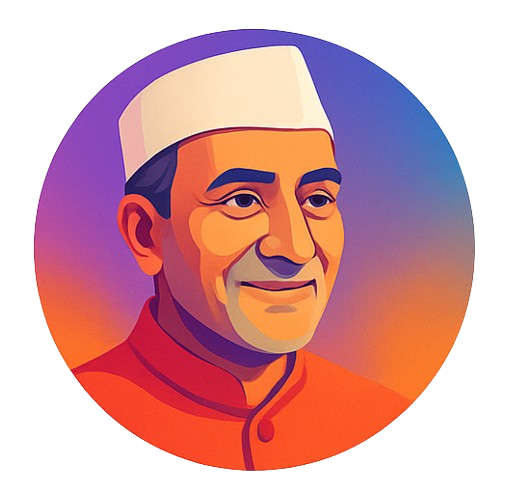

"The children of today will make the India of tomorrow." – Jawaharlal Nehru
Jawaharlal Nehru — First Prime Minister of India, fondly called Chacha Nehru. Symbol of leadership, vision, and nurturing young minds.
Ms. Priya Sharma
Arjun Verma (Grade 11)
Sanya Kapoor (Grade 10)